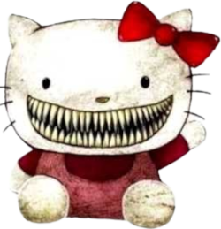

A lenda sobre a boca de Hello Kitty
Hello Kitty tem uma lenda sem comprovações sobre sua boca, a lenda consiste no fato sobre o porque a personagem não ter uma boca.

Dizem que uma menina de 14 anos estava com câncer na boca em estágio terminal, e por desespero a sua mãe fez pacto com o diabo para que sua filha fosse curada. Em troca o diabo pediu que ela prometesse criar uma marca de sucesso mundial, na essa marca se tornou sendo a Hello Kitty
Mas na verdade o motivo por trás do porque a personagem não ter boca se justifica por uma escolha da empresa, que queria que a personagem não tivesse boca para representar os sentimentos que ela sente sendo os mesmos que os fãs sentem. Dessa forma qualquer pessoa poderia imaginar os sentimentos que a personagem poderia estar sentindo.